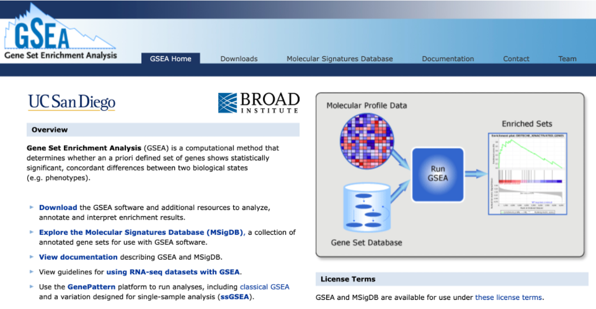
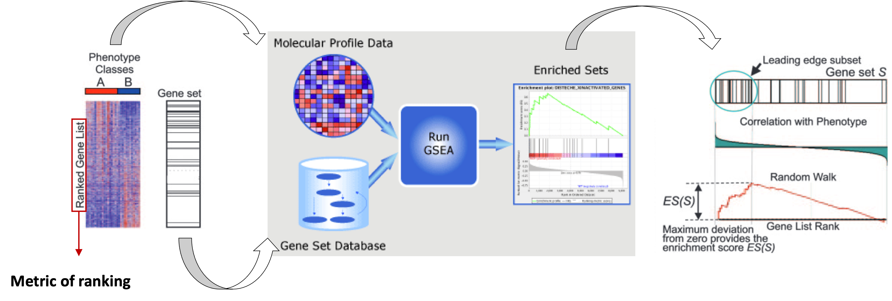
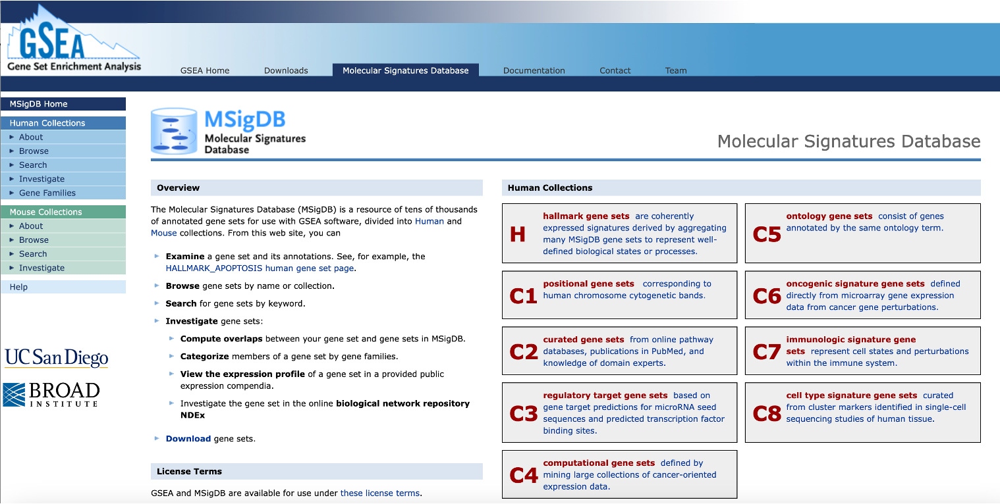
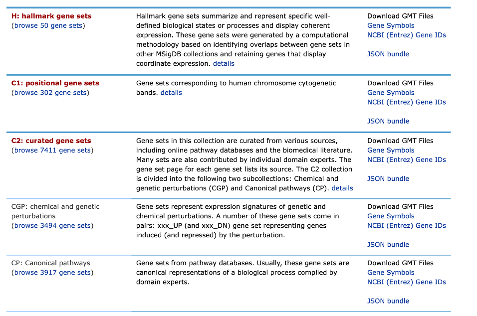
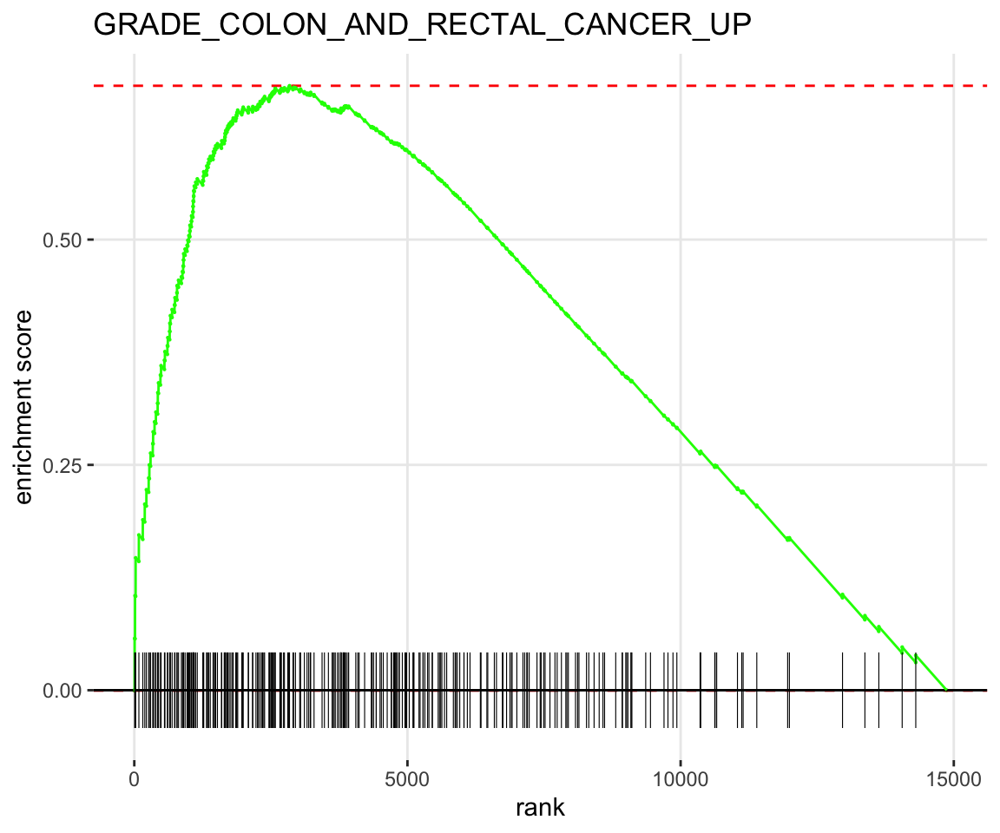
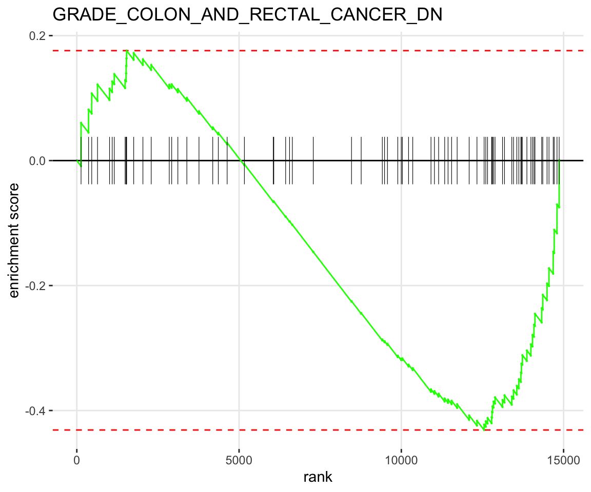
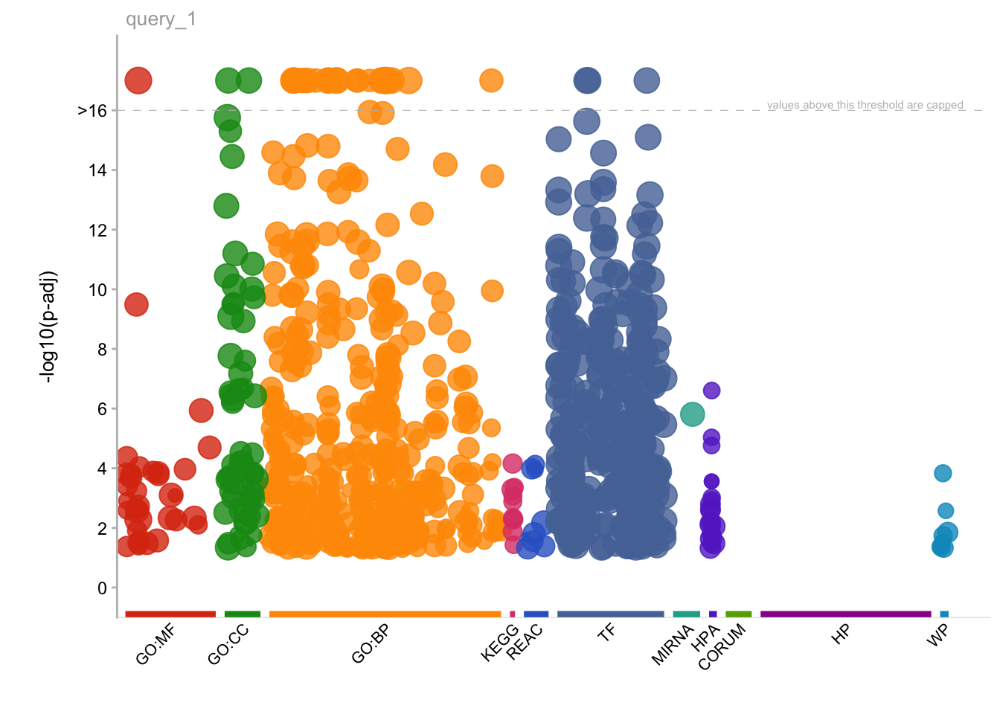
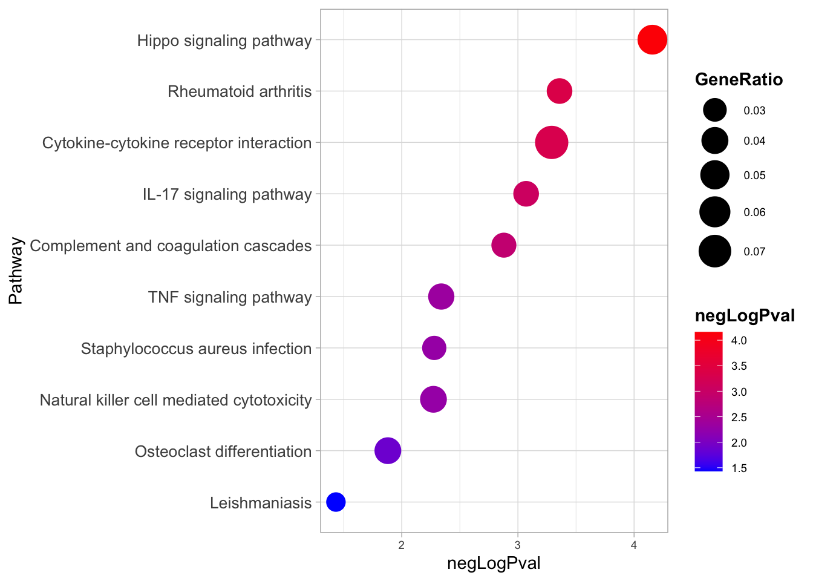
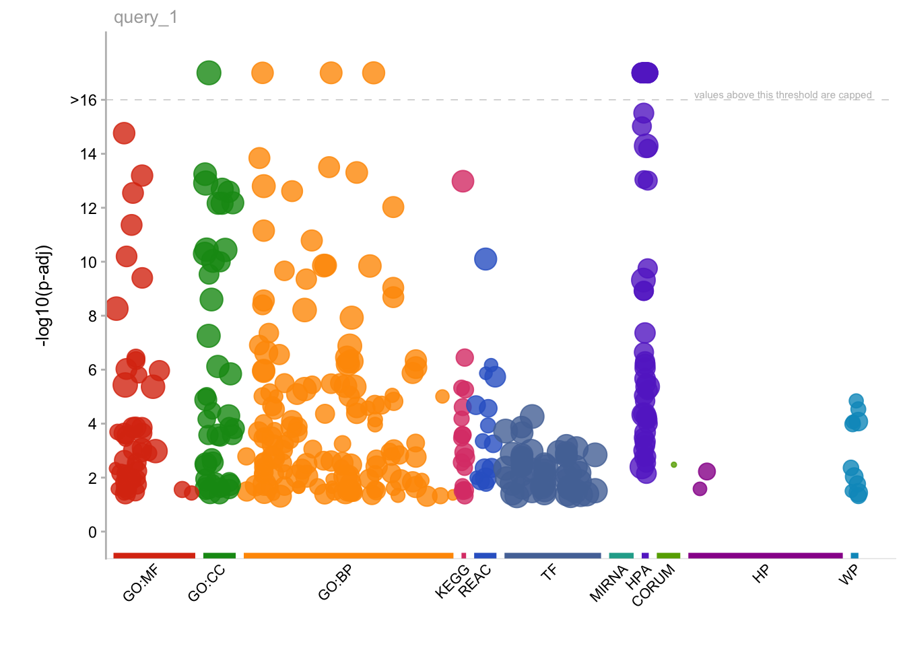
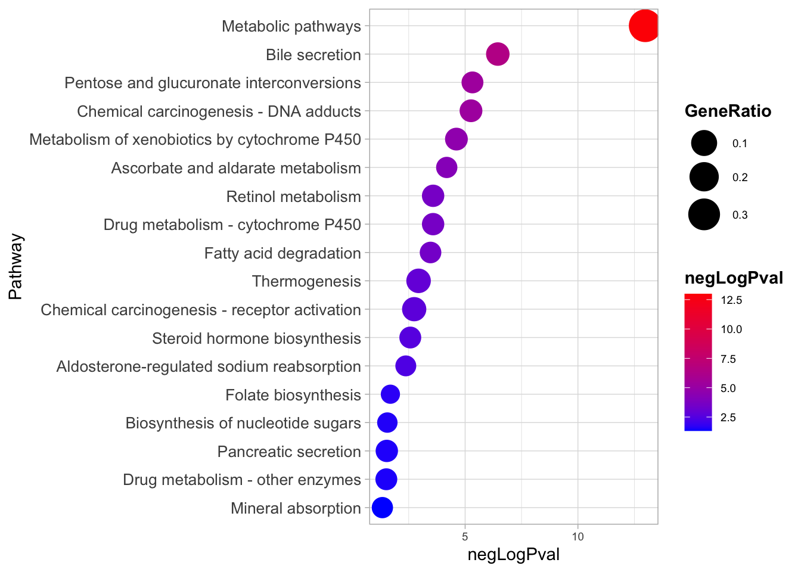

res <- read.table('../results/res.deg.csv', sep='\t', header=T, row.names=1)RNA-seq_analysis_part2
Objectives
- Downstream analysis of differential expression data
- Gene ontology analysis on interesting gene groups
- Gene set enrichment analysis (GSEA)
Interpreting a long list of genes can be challenging because assessing each gene individually can not easily capture the key biological mechanisms underlying distinct phenotypes.

Various computational approaches have been developed to assess the broader biological context of findings from omics experiments. Once we have our differentially expressed genes, we can perform downstream analyses to check the functional aspects of the group of genes which are up- or down-regulated in our condition of interest. In the following sections, we will go through two of these, Gene Set Enrichment Analysis (GSEA) and Gene Ontology Enrichment Analysis (GO).
We can then start addresing some interesting questions: - What is the function of the differentially expressed genes? - What can they tell us regarding the molecular/phenotypic differences between our groups of interest? - Do they belong to specific ontologies or pathways?
Import libraries
Let’s upload the results file with information on the differential genes we generated.
Import these files as R objects
Enrichment analysis using GSEA
Gene Set Enrichment Analysis - GSEA is a computational methods that determines whether any a priori defined geneset shows statistically significant differences between two biological states (e.g. phenotypes).
In other words…
…if it is enriched at the top of a list of genes ordered on the basis of expression differences between two groups

(The web interface for GSEA)The following image adapted from the original publication illustrates the main steps in GSEA.

To answer if members of a gene set occur towards the top or bottom of the ranked list of genes, we need:
- gene sets defined based on prior biological knowledge
- ranked list of differentially expressed genes (e.g. based on logFold Change or P-value)
We will perform Pre-ranked GSEA using all genes tested for differential analysis, ranked by their -log10(p-adjusted value) * the sign of the log2FoldChange, e.g. significantly upregulated genes are at the top of the rank whilst significantly downregulated ones are at the bottom. In our case, we want to check if a gene set of colorectal cancer in significantly enriched in the genes that are upregulated in our primary CRC samples. To run GSEA, we will use the fgsea package.
We will first retrieve gene sets from the Molecular Signatures Database (MSigDB), a resource of tens of thousands of annotated gene sets for use with GSEA software, divided into Human and Mouse collections. In order to extract the gene set without the need to directly download it, we are going to access MSigDB directly from R using another package called msigdbr.

(The web interface for MSigDB)There are 35,134 gene sets (number constantly increases) in the Human MSigDB that are divided into 9 major collections.

(Human MSigDB Collections)# Rank the genes based on their padj x sign(log2FC)
ranked <- res %>%
rownames_to_column(var="GeneID") %>%
filter(!GeneID=="") %>%
mutate(padjxFC=-log10(FDR)*sign(logFC)) %>%
arrange(desc(padjxFC)) %>%
pull(padjxFC, GeneID)
head(ranked) PALD1 CDH3 ASIC1 C17orf96 AJUBA KLF7
54.98910 43.63364 40.95911 33.19569 32.54922 32.20434 tail(ranked) UGDH SGSM3 CCNJL SUCLG1 NANS BEST4
-14.27637 -14.42987 -14.99255 -17.34078 -17.78642 -18.20838 Install and import libraries for fgsea and msigdbr
if (!require(fgsea, quiet=TRUE))
BiocManager::install("fgsea")if (!require(msigdbr, quiet=TRUE))
install.packages("msigdbr")Extract the curated gene sets (C2) from the MSigDB database
library(msigdbr)
# Extract specific gene sets from the MSigDB database, e.g. Chemical and Genetic Pertubations
curated_gsets <- msigdbr(species = "human", collection = "C2", subcollection = 'CGP')Inspect the information and gene sets we retrieved.
names(curated_gsets) [1] "gene_symbol" "ncbi_gene" "ensembl_gene"
[4] "db_gene_symbol" "db_ncbi_gene" "db_ensembl_gene"
[7] "source_gene" "gs_id" "gs_name"
[10] "gs_collection" "gs_subcollection" "gs_collection_name"
[13] "gs_description" "gs_source_species" "gs_pmid"
[16] "gs_geoid" "gs_exact_source" "gs_url"
[19] "db_version" "db_target_species" curated_gsets %>% pull(gs_name) %>% unique() %>% head(2)[1] "ABBUD_LIF_SIGNALING_1_DN" "ABBUD_LIF_SIGNALING_1_UP"Check if there are any gene sets related to Colon Cancer.
curated_gsets %>% filter(grepl('COLON_AND_RECTAL',gs_name)) %>% head() %>% kbl() %>% kable_styling()| gene_symbol | ncbi_gene | ensembl_gene | db_gene_symbol | db_ncbi_gene | db_ensembl_gene | source_gene | gs_id | gs_name | gs_collection | gs_subcollection | gs_collection_name | gs_description | gs_source_species | gs_pmid | gs_geoid | gs_exact_source | gs_url | db_version | db_target_species |
|---|---|---|---|---|---|---|---|---|---|---|---|---|---|---|---|---|---|---|---|
| ACTL8 | 81569 | ENSG00000117148 | ACTL8 | 81569 | ENSG00000117148 | LOC81569 | M15780 | GRADE_COLON_AND_RECTAL_CANCER_DN | C2 | CGP | Chemical and Genetic Perturbations | Down-regulated genes in both rectal and colon carcinoma compared to normal mucosa samples. | HS | 17210682 | Table 5S: Colon < 1 & Rectum < 1 | 2024.1.Hs | HS | ||
| ADAMTSL4 | 54507 | ENSG00000143382 | ADAMTSL4 | 54507 | ENSG00000143382 | TSRC1 | M15780 | GRADE_COLON_AND_RECTAL_CANCER_DN | C2 | CGP | Chemical and Genetic Perturbations | Down-regulated genes in both rectal and colon carcinoma compared to normal mucosa samples. | HS | 17210682 | Table 5S: Colon < 1 & Rectum < 1 | 2024.1.Hs | HS | ||
| AKR7A2 | 8574 | ENSG00000053371 | AKR7A2 | 8574 | ENSG00000053371 | AKR7A2 | M15780 | GRADE_COLON_AND_RECTAL_CANCER_DN | C2 | CGP | Chemical and Genetic Perturbations | Down-regulated genes in both rectal and colon carcinoma compared to normal mucosa samples. | HS | 17210682 | Table 5S: Colon < 1 & Rectum < 1 | 2024.1.Hs | HS | ||
| AOC2 | 314 | ENSG00000131480 | AOC2 | 314 | ENSG00000131480 | AOC2 | M15780 | GRADE_COLON_AND_RECTAL_CANCER_DN | C2 | CGP | Chemical and Genetic Perturbations | Down-regulated genes in both rectal and colon carcinoma compared to normal mucosa samples. | HS | 17210682 | Table 5S: Colon < 1 & Rectum < 1 | 2024.1.Hs | HS | ||
| B3GALNT1 | 8706 | ENSG00000169255 | B3GALNT1 | 8706 | ENSG00000169255 | B3GALT3 | M15780 | GRADE_COLON_AND_RECTAL_CANCER_DN | C2 | CGP | Chemical and Genetic Perturbations | Down-regulated genes in both rectal and colon carcinoma compared to normal mucosa samples. | HS | 17210682 | Table 5S: Colon < 1 & Rectum < 1 | 2024.1.Hs | HS | ||
| C14orf132 | 56967 | ENSG00000227051 | C14orf132 | 56967 | ENSG00000227051 | C14orf132 | M15780 | GRADE_COLON_AND_RECTAL_CANCER_DN | C2 | CGP | Chemical and Genetic Perturbations | Down-regulated genes in both rectal and colon carcinoma compared to normal mucosa samples. | HS | 17210682 | Table 5S: Colon < 1 & Rectum < 1 | 2024.1.Hs | HS |
We will filter the curated gene sets for the gene sets of our interest and then prepare a list retrieving the genes that are contained in each geneset (shown in the gs_name column).
# Filter the curated gene sets for the gene set of our interest
gene_set_name <- c("GRADE_COLON_AND_RECTAL_CANCER_UP", "GRADE_COLON_AND_RECTAL_CANCER_DN")
# Create an empty gene set list
gset <- list()
# For each gene set retrieve the gene symbols and store them in the gset list.
for (gs in gene_set_name) {
# subset the table for a gene set
tmp <- curated_gsets %>% filter(gs_name==gs)
# retrieve gene symbols
tmp_gset <- list(tmp$gene_symbol)
#names(tmp_gset) <- gene_set_name
# add the genes in the gset list
gset[gs] <- tmp_gset
}# Retrieve the number of genes in each element of the list
lapply(gset, length)$GRADE_COLON_AND_RECTAL_CANCER_UP
[1] 291
$GRADE_COLON_AND_RECTAL_CANCER_DN
[1] 102gset$GRADE_COLON_AND_RECTAL_CANCER_UP
[1] "AAMP" "AARS1" "ABCB8" "ABCF1" "ACBD6" "ADGRG1"
[7] "AHCY" "ALG1" "AMPD3" "ANXA5" "ATIC" "ATP6AP2"
[13] "AURKA" "AZGP1" "BACE2" "BORA" "BPHL" "C4BPB"
[19] "CAMSAP1" "CARHSP1" "CCDC191" "CCDC85B" "CCDC92" "CCNB1"
[25] "CCT5" "CCT7" "CCT8" "CD44" "CD46" "CDC25B"
[31] "CDC45" "CDC6" "CDCA7" "CDK1" "CDK7" "CEP57L1"
[37] "CFB" "CHCHD2" "CKS2" "CNBP" "COL4A1" "COPS8"
[43] "CSNK1E" "CSTF1" "CTSB" "DAP3" "DCAF7" "DDIT4"
[49] "DDX1" "DDX27" "DDX39A" "DDX39B" "DEF8" "DGAT2"
[55] "DHX8" "DHX9" "DNAJA3" "DNAJC2" "DNTTIP1" "DOLK"
[61] "DPM1" "DPY19L1" "DRG1" "DUSP18" "EEF1E1" "EFTUD2"
[67] "EIF2S2" "EIF3B" "EIF3E" "EIF4A1" "EIF4B" "EIF6"
[73] "EMC8" "ENG" "EPHB2" "EPRS1" "ERI1" "ETS2"
[79] "ETV4" "EXOC2" "FAM210B" "FBL" "FBXO11" "FDFT1"
[85] "FERMT1" "FXYD5" "GARS1" "GCLC" "GCSH" "GDF15"
[91] "GEMIN6" "GLO1" "GPSM2" "GSK3B" "GTF2F2" "GTF3A"
[97] "GTPBP10" "GYG2" "H2AZ1" "HELLS" "HILPDA" "HJURP"
[103] "HM13" "HMGB1" "HMGB2" "HNRNPA1" "HNRNPA2B1" "HNRNPD"
[109] "HNRNPK" "HOXB5" "HSPA4" "HSPA9" "HSPE1" "ICA1"
[115] "IFITM1" "IFRD1" "INTS7" "IRAK1" "ITGB5" "KARS1"
[121] "KBTBD2" "KIF23" "KNTC1" "KPNA3" "L1CAM" "LAMP1"
[127] "LAPTM4B" "LDHA" "LDHB" "LRP8" "LST1" "LY6E"
[133] "LYAR" "MACROH2A1" "MAGED2" "MARS1" "MBTPS2" "MCM2"
[139] "MCM3" "MCM4" "MCM5" "MCM7" "MDC1" "MELK"
[145] "METTL2B" "METTL3" "METTL5" "MKLN1" "MLST8" "MRGBP"
[151] "MRPL17" "MRPL3" "MRPL9" "MTHFD1" "MTHFD2" "MYC"
[157] "NAA10" "NDUFAF7" "NEBL" "NIP7" "NIT2" "NMI"
[163] "NOB1" "NOL8" "NONO" "NOP56" "NPM1" "NQO2"
[169] "NSMCE2" "NUSAP1" "OLA1" "OSER1" "PA2G4" "PABPC3"
[175] "PAFAH1B3" "PCNA" "PDCD2L" "PDCD6" "PDK3" "PDXK"
[181] "PERP" "PFDN2" "PKM" "PLAAT3" "PLAU" "PLCB4"
[187] "PLK1" "PMPCB" "PNPO" "PNPT1" "POFUT1" "POLD2"
[193] "POLQ" "POLR1D" "POLR2D" "POMP" "PPA1" "PPIA"
[199] "PRDX1" "PRDX4" "PRKDC" "PSMA1" "PSMA2" "PSMA3"
[205] "PSMB1" "PSMB3" "PSMB7" "PSMD14" "PSMD4" "PSMG1"
[211] "PTCD3" "PTDSS1" "PTPN12" "PXDN" "RAB4B" "RAN"
[217] "RBM26" "RCC1" "RCN1" "RFC2" "RFC5" "RHEB"
[223] "RLIM" "RMI2" "RRM1" "RRM2" "RTF2" "RTKN"
[229] "S100A14" "SAP18" "SEPHS1" "SERPINB5" "SET" "SFT2D3"
[235] "SH3GL1" "SHISA5" "SKA3" "SLC12A2" "SMPD4" "SNRPB"
[241] "SOD2" "SOX9" "SPARC" "SPATA13" "SPATA13" "SPP1"
[247] "SRP72" "SRSF1" "SRSF2" "SSB" "SSRP1" "SYAP1"
[253] "SYNCRIP" "TALDO1" "TARS1" "TBCE" "TCF7" "TFB1M"
[259] "TGDS" "TGFBI" "THEM6" "THOC3" "THY1" "TIMELESS"
[265] "TIMP1" "TKT" "TMEM97" "TMSB4Y" "TPI1" "TRAF5"
[271] "TRAP1" "TRUB2" "TTPAL" "UBD" "UBE2N" "UBR4"
[277] "URI1" "USP7" "USP9X" "UTP11" "VBP1" "VEGFA"
[283] "VKORC1L1" "WDR74" "WDR75" "XRN2" "ZDHHC9" "ZFAND1"
[289] "ZMYND8" "ZNF84" "ZNG1B"
$GRADE_COLON_AND_RECTAL_CANCER_DN
[1] "ACTL8" "ADAMTSL4" "AKR7A2" "AOC2" "B3GALNT1"
[6] "C14orf132" "C2orf88" "CA5A" "CACNA2D2" "CBS"
[11] "CCDC71" "CCR9" "CD28" "CDK12" "CFD"
[16] "CHST15" "CHST8" "COL4A5" "CPN2" "CX3CR1"
[21] "CYB5D1" "DAP" "DHPS" "FABP7" "FAN1"
[26] "FHL1" "FKRP" "GFI1" "GGA1" "GNA11"
[31] "GNPDA1" "GPC1" "GPR87" "GREB1" "GTF3C4"
[36] "HAUS5" "HIC2" "HMGXB4" "ITPKB" "JAM3"
[41] "KRT84" "LDB2" "LGALS2" "LRFN1" "LRTOMT"
[46] "LYPD3" "MEF2D" "MITF" "MSRA" "MYCN"
[51] "NAT8L" "NAV1" "NR1H4" "NR3C1" "NUDT11"
[56] "OSGIN2" "PARM1" "PARVB" "PCDHB5" "PDK4"
[61] "PGC" "PLAC8" "PLD1" "PLPP1" "PRKACB"
[66] "PRRT2" "PTPRZ1" "RERE" "SASH1" "SCAMP5"
[71] "SERTAD4" "SESN2" "SIRPB1" "SIX1" "SLC16A9"
[76] "SLC30A3" "SLC30A6" "SMIM14" "SNCA" "SOCS2"
[81] "SPIN4" "ST6GALNAC6" "STAR" "STAT5A" "SYNC"
[86] "TBC1D27P" "TGFBR3" "TIMM22" "TLE4" "TLN2"
[91] "TM9SF1" "TOX2" "TRPS1" "TYRP1" "UBAP1"
[96] "UGDH" "UNC5B" "XPNPEP3" "YY1AP1" "ZBTB4"
[101] "ZNF135" "ZNF787" Run GSEA on our ranked list of genes using the gene sets we retrieve from MSigDB. Here, we set the number of permutations to 1000.
library(fgsea)
# Run GSEA
fgseaRes <- fgsea(pathways = gset,
stats = ranked,
nperm = 1000
)Inspect the results for each geneset, which include the normalized enrichment score (NES) and nominal P-value using 1000 permutations.
# Take a look at results
fgseaRes pathway pval padj ES NES
<char> <num> <num> <num> <num>
1: GRADE_COLON_AND_RECTAL_CANCER_UP 0.00120048 0.00240096 0.6717684 2.141272
2: GRADE_COLON_AND_RECTAL_CANCER_DN 0.03536977 0.03536977 -0.4311914 -1.384921
nMoreExtreme size leadingEdge
<num> <int> <list>
1: 0 274 TGFBI,ETV4,FXYD5,DGAT2,SPP1,NEBL,...
2: 10 79 UGDH,GGA1,GNA11,AKR7A2,C2orf88,TLN2,...Plot GSEA results
# Plot GSEA results
for (gs in unique(gene_set_name)){
print(plotEnrichment(gset[[gs]],
ranked) + labs(title=gs))
}

The GSEA results show that the GRADE_COLON_AND_RECTAL_CANCER genesets are enriched in the differentially upregulated and downregulated genes in our dataset. The geneset derives from a study, in which they used oligonucleotide microarrays to profile human rectal and colon carcinoma tumors compared to normal mucosa samples.
Can you retrieve the leading edge genes from the reuslts?
fgseaRes$leadingEdge[[1]]
[1] "TGFBI" "ETV4" "FXYD5" "DGAT2" "SPP1" "NEBL"
[7] "LRP8" "MBTPS2" "TCF7" "GPSM2" "CDC25B" "AZGP1"
[13] "ZMYND8" "SOX9" "CD46" "NPM1" "TIMP1" "MYC"
[19] "PLAU" "MRGBP" "PTPN12" "CD44" "AHCY" "PERP"
[25] "DPY19L1" "OLA1" "PPA1" "EIF2S2" "LY6E" "TRAF5"
[31] "DPM1" "GLO1" "RHEB" "FERMT1" "NOB1" "VEGFA"
[37] "WDR75" "DDX27" "CSTF1" "LYAR" "IFITM1" "POLR1D"
[43] "UBD" "GTF3A" "ZFAND1" "HILPDA" "EIF3E" "CAMSAP1"
[49] "TMEM97" "L1CAM" "NONO" "GTPBP10" "RLIM" "ETS2"
[55] "DNAJC2" "SET" "ZDHHC9" "XRN2" "TGDS" "NOL8"
[61] "SLC12A2" "PDK3" "CFB" "TTPAL" "MKLN1" "URI1"
[67] "ZNF84" "DEF8" "SPARC" "HM13" "LDHA" "CCDC85B"
[73] "VBP1" "OSER1" "CDCA7" "POFUT1" "SERPINB5" "NIT2"
[79] "NQO2" "AURKA" "PRDX4" "SSB" "CKS2" "KBTBD2"
[85] "HNRNPA1" "NIP7" "GTF2F2" "DDIT4" "SHISA5" "ENG"
[91] "RCN1" "PRKDC" "CSNK1E" "USP9X" "LDHB" "INTS7"
[97] "MTHFD2" "METTL5" "RBM26" "CDK7" "CDC6" "ADGRG1"
[103] "COPS8" "IRAK1" "PAFAH1B3" "VKORC1L1" "NOP56" "GCSH"
[109] "EIF3B" "AMPD3" "RAN" "PSMD14" "GCLC" "PNPT1"
[115] "EXOC2" "PSMA1"
[[2]]
[1] "UGDH" "GGA1" "GNA11" "AKR7A2" "C2orf88"
[6] "TLN2" "ST6GALNAC6" "TIMM22" "SYNC" "ZNF787"
[11] "LGALS2" "ZNF135" "SMIM14" "MSRA" "PLD1"
[16] "SESN2" "UNC5B" "SERTAD4" "DAP" "PARM1"
[21] "NR3C1" "GFI1" "TLE4" "CYB5D1" "LRTOMT"
[26] "SOCS2" "TM9SF1" "SLC16A9" "CCDC71" "RERE" Gene Ontology or Pathway Enrichment Analyses (over representation)
To obtain further biological insights related to gene regulation we can perform Gene Ontology or Pathway Enrichment analyses. We will try to get a more unsupervised look at what kind of biological processes are captured by the upregulated genes in primary CRC.
We will do this using the gProfiler package in R.
Gene Ontology is a standardized system for annotating genes with terms describing their biological attributes. These terms are organized into three main categories: Molecular Function (the biochemical activity of the gene product), Biological Process (the broader biological objectives the gene contributes to), and Cellular Component (the location where the gene product is active).
The enrichment is evaluated in this way: a list of genes is compared against a background set of genes (e.g., all genes in the genome) to identify GO terms that are significantly overrepresented in the list of interest.
Statistical tests, such as Fisher’s exact test or hypergeometric test, are commonly used to determine whether the observed number of genes associated with a particular GO term in the gene list is significantly higher than expected by chance.
The output of GO enrichment analysis includes a list of significantly enriched GO terms along with statistical metrics, such as p-values or false discovery rates (FDR).
This information helps to prioritize genes for further study and provides further context to the experimental results!
First, we will create a custom function that takes as input a list of genes and automatically run the gProfiler function responsible for calulating the enrichment and also creating two plots: one that generally describes the categories of enriched terms, and another one more specific for enriched pathways from KEGG (aka, Kyoto Encyclopedia of Genes and Genomes).
# Result data.frames will be stored in this object
gprof <- c()
#genes: provide a character vector with gene names
#geneListName: a character identifying the list of genes that will be used to name the data.frame stored in res and to create the pdf
gprofiler <- function(genes, geneListName) {
#Parameters you might want to change:
#ordered_query: if the gene list provided is ranked
#evcodes: if you want to have the gene ids that intersect between the query and the term
#custom_bg: the gene universe used as a background
gostres <- gost(query =unique(as.character(genes)),
organism = "hsapiens", ordered_query = FALSE,
multi_query = FALSE, significant = TRUE, exclude_iea = FALSE,
measure_underrepresentation = FALSE, evcodes = TRUE ,
user_threshold = 0.05, correction_method = "g_SCS",
domain_scope = "annotated", custom_bg = NULL,
numeric_ns = "", sources = NULL, as_short_link = FALSE)
# Create the overview plot (not interactive)
gostplot <- gostplot(gostres, capped = TRUE, interactive = F)
# Keep only useful columns
gp_mod <- gostres$result[,c("query", "source", "term_id",
"term_name", "p_value", "query_size",
"intersection_size", "term_size",
"effective_domain_size", "intersection")]
gp_mod$query <- geneListName
# Calculate GeneRatio for the dotplot: number of genes intersecting the term/ total number of unique genes provided
gp_mod$GeneRatio <- gp_mod$intersection_size/gp_mod$query_size
# Number of genes within the term / number of all unique genes across all terms (universe)
gp_mod$BgRatio <- paste0(gp_mod$term_size, "/", gp_mod$effective_domain_size)
# Rename columns
names(gp_mod) <- c("Cluster", "Category", "ID", "Description", "p.adjust", "query_size", "Intersection_size", "term_size", "effective_domain_size", "intersection", "GeneRatio", "BgRatio")
# Save the results data.frame in res
gprof[[geneListName]] <<- gp_mod
# Remove possible duplicate terms for plotting
gp_mod %>% group_by(Description) %>%
filter(row_number() == 1)
# omit_ids <- gp_mod[duplicated(gp_mod$Description), ]
# omit_ids_list <- omit_ids$Description
# gp_mod <- gp_mod[!gp_mod$Description %in% omit_ids_list,]
go_table_pathways <- filter(gp_mod, Category %in% c('KEGG'))
# Calculate negLog P-Value and rank terms based on this value
go_table_pathways$negLogPval=-log10(go_table_pathways$p.adjust)
go_table_pathways <- go_table_pathways[order(-go_table_pathways$negLogPval),]
# Make dot plot
dotPlot <- arrange(go_table_pathways, negLogPval) %>%
group_by(Description) %>%
filter(row_number() == 1) %>%
ungroup()
dotPlot <- arrange(go_table_pathways, negLogPval) %>%
mutate(Description = factor(.$Description, levels = .$Description)) %>%
ggplot(aes(negLogPval, Description)) +
geom_point(aes(color = negLogPval, size = GeneRatio))+
scale_size(range = c(5, 9)) +
scale_color_gradient(low="blue", high="red")+
theme_light()+
ylab('Pathway')+
theme(axis.text.y=element_text(size = 10),
axis.text.x=element_text(size = 7),
legend.text = element_text(size = 7),
legend.title = element_text(face = 'bold'))
# Print on display
return(list(gostplot, dotPlot))
}Now, let’s extract a vector of genes up-regulated in tumor samples, and perform the analysis:
# Extract upregulated genes
up_genes_all <- res %>%
filter(FDR < 0.01 & logFC > 1) %>%
arrange(FDR) %>%
rownames()We can check the number of genes that we have retrieved.
paste("Number of tumor upregulated genes:", length(up_genes_all))[1] "Number of tumor upregulated genes: 1288"paste0("Top differentially expressed genes:", paste(head(up_genes_all, 10), collapse = ", "))[1] "Top differentially expressed genes:PALD1, CDH3, ASIC1, C17orf96, AJUBA, KLF7, TGFBI, ARHGAP23, EPHX4, SIM2"We can now run the function created above to obtain our enriched biological pathways.
# Load package
library(gprofiler2)
# Run custom function
gprofiler(genes = up_genes_all, geneListName = 'genes_up')[[1]]
[[2]]
Here, interestingly, we find that the two most enriched biological pathways is “Hippo signalling pathway”.
From this insight we can start to generate new hypotheses, like the one tested in the study about the relevance of YAP/TAZ factors, which are indeed key downstream effectors of the Hippo signalling.
💡 GO analyses might highlight very interesting patterns and generate hypotheses, but are many times quite hard to interpret depending also on the biological system we are studying.
What information did we retrieve from the analysis?
All information is stored in the genes_up table
gprof$genes_up %>% colnames() [1] "Cluster" "Category" "ID"
[4] "Description" "p.adjust" "query_size"
[7] "Intersection_size" "term_size" "effective_domain_size"
[10] "intersection" "GeneRatio" "BgRatio" gprof$genes_up %>% head(5) %>% kbl() %>% kable_styling()| Cluster | Category | ID | Description | p.adjust | query_size | Intersection_size | term_size | effective_domain_size | intersection | GeneRatio | BgRatio |
|---|---|---|---|---|---|---|---|---|---|---|---|
| genes_up | GO:BP | GO:0048856 | anatomical structure development | 0 | 1023 | 500 | 5997 | 21026 | CDH3,ASIC1,AJUBA,KLF7,TGFBI,SIM2,PITX1,KRT80,MMP12,ETV4,ATP11A,OTX1,LAMC1,PAX9,TESC,NCS1,NOS3,FLT1,STX2,GRHL1,FHL3,CLDN1,SLC29A1,HOMER1,IGF2BP3,FLNA,ACSL6,GDF11,SYT1,FUT1,ALDOC,BMP4,LPCAT1,EPHB1,CECR2,NES,PDX1,SLC9B2,GRIN2B,SEMA3A,NR2F1,FJX1,DUSP15,DGAT2,MET,TBX20,MSX2,TGFBR2,NAP1L1,ZIC5,CAMSAP2,PTPN13,FSTL3,NRN1,TUBB3,KIF3A,MDFI,JAG2,DMRTA2,CELSR3,VASH2,CX3CL1,GPRIN1,SPP1,ANO6,SHC3,ADRA2C,NKD1,FOXQ1,NOTUM,GDPD5,E2F5,KLK6,CBX2,TSPEAR,NEBL,AGT,FOXD1,BRSK2,IL23A,SLC39A6,DGKG,PCDHAC2,SH3TC2,TFAP2A,CA9,ENC1,SLC39A10,ASAP1,KLC3,LRP8,LHX6,EGFL7,CTSH,GJC3,LIPA,SALL4,FZD2,ACSL4,LZTS3,PDLIM7,NRP2,LEF1,SLC7A5,DKK4,MBTPS2,SEMA4D,CDKN2A,ADAMTS6,TCF7,ATG9B,FGD3,GABRE,ZNF385A,HOXC11,PLXNB3,ITPR1,GRIN2D,TXLNG,GAL,FZD7,ETV5,SOX14,CCDC78,CD81,TBX15,RHOQ,SPTBN2,GRHL3,ADAM19,CXCL8,RILPL2,CDC25B,LRP4,WT1,TH,WNT3,INPP5D,AQP6,KRT23,PDZD7,ZIC2,SIX1,EN2,RYR2,SIX4,NLGN2,ASCL2,KLK7,OSR2,RILPL1,SVEP1,SERPINE2,WDR72,FAIM2,SNAI1,MYL9,PDLIM3,PROX1,FGF19,CLEC7A,NFAM1,MMP9,TGM2,FOXC1,SOBP,FEZF1,PCDHAC1,TGIF2,MTHFD1L,DUOX2,PABPC1L,WWTR1,TIMP1,IL1A,POU4F1,FZD3,MSX1,DNAH5,SERPINE1,CXCL9,TNFRSF9,TGFBR3,NGFR,NEDD4,AMOTL2,ECM1,ONECUT2,MYC,RASIP1,CHI3L1,DLX6-AS1,TYRO3,STK3,PRDM8,ST8SIA6,CXCL1,PDGFB,STRIP2,QKI,ANXA1,CSF3R,S100A4,MKX,CPNE1,PLCB1,SOX12,SERPINI1,PHGDH,OBSCN,FOXL1,TLX1,CCDC136,KLK8,DMBX1,BATF,FOXF1,RUNX2,SRCIN1,PTPN12,PIK3R3,BICD1,RIPPLY3,GREM1,MMP17,NDP,PTPN14,ZMYND15,ARID5A,DRD2,CXCL10,PLAC1,NOTCH3,IL27RA,SEMA7A,WNT10A,EFEMP2,CCNO,FGD5,STX1B,GATA2,NEUROG2,ICAM1,STXBP1,GBX2,TP73,F7,STMN3,TTC9,SULT2B1,NEK5,DYRK3,DENND5A,WNT7B,DUSP4,PLAGL2,TRNP1,WFS1,OXTR,MYOM3,TNNI3,LAMA5,TNFRSF1B,EREG,MAD2L2,SSUH2,TNFRSF19,SRGN,INHBB,COL6A3,RASGRF1,SRPX2,KRT17,NFATC1,WTIP,ARHGDIB,MME,NLRP3,CCSAP,PPT1,DCLRE1C,DLX6,SOX4,EIF2S2,BAIAP2,CALB1,LOXL3,MAPT,PHOSPHO1,CYP26A1,GPR158,CMTM7,GAS2,IRX5,IMMP2L,RHCG,ETNK2,AXIN2,COL12A1,PAQR7,SLC2A12,TLR2,ATRX,RIPK2,PNPLA1,BMP7,FMNL3,NEB,P2RX7,PUS7,TEAD4,LGI2,SPNS2,SLC7A11,ADARB1,BAAT,DTNB,SH2B2,SOX1,GATA3,DZIP1,CD109,NANOS3,ITGAX,P2RX5,NMNAT2,VEGFA,MCIDAS,TNFAIP2,IL4I1,BCL6,DHRS2,CDON,SP6,PTGS2,APLF,GLIS2,MAP1A,OSCAR,PRKCG,TM4SF1,CSGALNACT1,RELT,CCDC40,KIF26B,NPHP1,CDKL5,BCL2L1,ARG2,TNC,TYROBP,SNX10,GPR137B,PGF,RGCC,MFGE8,PLXNA3,S1PR2,CLU,ZFP36L1,UBD,COL1A1,DLX3,EVX1,S100A9,KCNJ8,LTB,AMIGO2,SHH,RND2,RAG1,POTEF,L1CAM,APLN,RPGRIP1L,PARD6B,WDR19,ELK3,APOE,PLD6,NR4A3,SHANK3,MAMSTR,ITGB2,IL34,CORO1A,PRR7,SPIRE1,GPNMB,GPRC5B,AGAP2,GPCPD1,APOLD1,JAK3,PIWIL1,ARHGAP22,CSRP2,MLXIPL,DOCK11,NDRG4,FOSL1,GPSM1,ADAM8,IL1RAP,FOXO6,DLL3,CCR1,APCDD1,DLX1,PALM3,PBX4,PRRX1,FGF20,VCAN,MTURN,AK8,AREG,ANXA3,SPI1,CTHRC1,SLC11A2,BFSP1,MAPK11,VAT1,CEBPB,ANLN,SMARCD3,ZP3,UNC5A,SLC12A2,CRYAB,RUNX3,AMH,ARL13B,CALCR,C1QC,COL5A1,MFAP2,BRSK1,THBS2,VNN1,TSPAN2,AQP5,TG,IL17RD,LRFN1,EML1,SLC25A27,FGFRL1,SYCP2,TACSTD2,DYX1C1,ADA,TMOD2,HHEX,GJC2,SERPINF2,ACKR3,DSC3,PTPRU,CABYR,TRIP13,SLC40A1,EHD2,WASF1,SPEG,CSPG5,KRT7,COL18A1,DACH1,DUOX1,AXL,FLNC,CST7,CRABP2,EDAR,RASSF10,SPARC,MAPK12,XRCC2,ADGRB2,IGSF9B,C3AR1,NPM2,PECAM1,HCN1,HLF,SLC1A3,NRROS,LCK,TNF,FCER1G,ARMC2,LRRK2,ADAMTSL4,HAVCR2,PCDHGA1,NCMAP,PLEK,SERPINB5 | 0.4887586 | 5997/21026 |
| genes_up | GO:BP | GO:0032502 | developmental process | 0 | 1023 | 527 | 6553 | 21026 | CDH3,ASIC1,AJUBA,KLF7,TGFBI,SIM2,PITX1,KRT80,MMP12,ETV4,ATP11A,OTX1,LAMC1,SLC6A6,PAX9,TESC,NCS1,NOS3,FLT1,STX2,GRHL1,FHL3,CLDN1,FADS1,SLC29A1,HOMER1,IGF2BP3,FLNA,ACSL6,GDF11,SYT1,FUT1,ALDOC,BMP4,LPCAT1,EPHB1,CECR2,NES,PDX1,SLC9B2,GRIN2B,SEMA3A,NR2F1,FJX1,DUSP15,DGAT2,MET,TBX20,MSX2,TGFBR2,NAP1L1,TRIB3,ZIC5,CAMSAP2,EIF5A2,PTPN13,FSTL3,WWC3,NRN1,TUBB3,KIF3A,MDFI,GRK5,JAG2,DMRTA2,CELSR3,VASH2,CX3CL1,GPRIN1,SPP1,ANO6,SHC3,ADRA2C,NKD1,FOXQ1,WWC2,NOTUM,GDPD5,E2F5,KLK6,CBX2,TSPEAR,NEBL,AGT,FOXD1,BRSK2,IL23A,SLC39A6,DGKG,PCDHAC2,SH3TC2,TFAP2A,CA9,ENC1,SLC39A10,ASAP1,KLC3,LRP8,LHX6,EGFL7,CTSH,GJC3,LIPA,SALL4,FZD2,TXNRD3,ACSL4,LZTS3,CFAP97,PDLIM7,NRP2,LEF1,SLC7A5,DKK4,LRRC34,MBTPS2,SEMA4D,CDKN2A,ADAMTS6,TCF7,ATG9B,FGD3,GABRE,ZNF385A,HOXC11,PLXNB3,ITPR1,GRIN2D,TXLNG,GAL,FZD7,ETV5,SOX14,CCDC78,CD81,TCFL5,TBX15,RHOQ,SPTBN2,GRHL3,ADAM19,CXCL8,RILPL2,CDC25B,LRP4,WT1,TH,WNT3,INPP5D,AQP6,KRT23,PDZD7,ZIC2,SIX1,EN2,SPAG4,RYR2,SIX4,NLGN2,ASCL2,KLK7,OSR2,RILPL1,SVEP1,SERPINE2,WDR72,FAIM2,SNAI1,MYL9,PDLIM3,PROX1,FGF19,CLEC7A,NFAM1,MMP9,TGM2,FOXC1,SOBP,FEZF1,PCDHAC1,TGIF2,MTHFD1L,DUOX2,PABPC1L,WWTR1,TIMP1,IL1A,POU4F1,FZD3,MSX1,DNAH5,SERPINE1,CXCL9,TNFRSF9,TGFBR3,DLX4,NGFR,NEDD4,AMOTL2,ECM1,ONECUT2,MYC,RASIP1,CHI3L1,DLX6-AS1,TYRO3,STK3,PRDM8,ST8SIA6,CXCL1,PDGFB,STRIP2,QKI,SLFN5,ANXA1,CSF3R,S100A4,MKX,MMP11,CPNE1,PLCB1,SOX12,SERPINI1,PHGDH,OBSCN,FOXL1,TLX1,CCDC136,KLK8,DMBX1,BATF,FOXF1,RUNX2,SRCIN1,PTPN12,PIK3R3,BICD1,RIPPLY3,GREM1,MMP17,ZNF503,NDP,PTPN14,ZMYND15,ARID5A,DRD2,CXCL10,PLAC1,NOTCH3,IL27RA,SEMA7A,WNT10A,EFEMP2,CCNO,FGD5,STX1B,GATA2,NEUROG2,ICAM1,STXBP1,GBX2,TP73,F7,STMN3,TTC9,SULT2B1,NEK5,DYRK3,DENND5A,WNT7B,DUSP4,PLAGL2,TRNP1,WFS1,OXTR,MYOM3,TNNI3,LAMA5,TNFRSF1B,EREG,MAD2L2,SSUH2,TNFRSF19,SRGN,INHBB,COL6A3,RASGRF1,SRPX2,KRT17,NFATC1,WTIP,ARHGDIB,MME,NLRP3,CCSAP,PPT1,DCLRE1C,DLX6,SOX4,EIF2S2,BAIAP2,CALB1,LOXL3,MAPT,PHOSPHO1,CYP26A1,GPR158,CMTM7,GAS2,IRX5,OSBPL8,IMMP2L,RHCG,ETNK2,AXIN2,COL12A1,PAQR7,SPOCD1,SLC2A12,TLR2,ATRX,RIPK2,PNPLA1,BMP7,FMNL3,NEB,P2RX7,PUS7,TEAD4,LGI2,SPNS2,SLC7A11,ADARB1,BAAT,DTNB,SH2B2,SOX1,GATA3,DZIP1,CD109,NANOS3,ITGAX,P2RX5,NMNAT2,VEGFA,MCIDAS,TNFAIP2,IL4I1,BCL6,DHRS2,CDON,SP6,PTGS2,APLF,CYP24A1,GLIS2,MAP1A,OSCAR,PRKCG,TM4SF1,CSGALNACT1,RELT,CCDC40,KIF26B,NPHP1,CDKL5,BCL2L1,ARG2,TNC,TYROBP,SNX10,GPR137B,PGF,RGCC,IFITM1,MFGE8,PLXNA3,S1PR2,CLU,ZFP36L1,UBD,COL1A1,ELF5,DLX3,EVX1,S100A9,KCNJ8,LTB,AMIGO2,SHH,RND2,RAG1,POTEF,L1CAM,APLN,RPGRIP1L,PARD6B,WDR19,ELK3,APOE,PLD6,NR4A3,SHANK3,MAMSTR,ITGB2,IL34,CORO1A,PRR7,SPIRE1,GPNMB,GPRC5B,AGAP2,GPCPD1,APOLD1,JAK3,PIWIL1,ARHGAP22,CSRP2,MLXIPL,DOCK11,NDRG4,FOSL1,GPSM1,ADAM8,IL1RAP,FOXO6,DLL3,CCR1,APCDD1,DLX1,PALM3,PBX4,PRRX1,FGF20,VCAN,MTURN,AK8,STEAP4,AREG,ANXA3,SPI1,CTHRC1,SLC11A2,BFSP1,MAPK11,VAT1,CEBPB,ANLN,SMARCD3,ZP3,UNC5A,SLC12A2,CRYAB,RUNX3,AMH,ARL13B,CALCR,C1QC,COL5A1,MYBL1,MFAP2,SLC4A11,BRSK1,THBS2,VNN1,TSPAN2,AQP5,TG,IL17RD,LRFN1,ADAM28,EML1,SLC25A27,FGFRL1,SYCP2,TACSTD2,DYX1C1,ADA,TMOD2,HHEX,GJC2,SERPINF2,ACKR3,DSC3,PTPRU,CABYR,TRIP13,SLC40A1,EHD2,WASF1,SPEG,CSPG5,KRT7,COL18A1,DACH1,DUOX1,AXL,FLNC,CST7,CRABP2,EDAR,RASSF10,SPARC,MAPK12,XRCC2,ADGRB2,CCDC85B,IGSF9B,C3AR1,NPM2,PECAM1,HCN1,HLF,SLC1A3,NRROS,LCK,TNF,FCER1G,ARMC2,LRRK2,ADAMTSL4,HAVCR2,PCDHGA1,NCMAP,PLEKHB1,PLEK,SERPINB5 | 0.5151515 | 6553/21026 |
| genes_up | GO:BP | GO:0032501 | multicellular organismal process | 0 | 1023 | 563 | 7322 | 21026 | CDH3,ASIC1,KLF7,TGFBI,SIM2,PITX1,KRT80,MMP12,ETV4,ATP11A,OTX1,LAMC1,SLC6A6,TESC,CEMIP,NCS1,NOS3,FLT1,GRHL1,CLDN1,SLC29A1,HOMER1,IGF2BP3,PROCR,FLNA,ACSL6,GDF11,SYT1,FUT1,KIFC3,BMP4,LPCAT1,EPHB1,CLDN16,CECR2,NES,PDX1,SLC9B2,GRIN2B,SEMA3A,NR2F1,FJX1,DUSP15,DGAT2,MET,TBX20,MSX2,TGFBR2,NAP1L1,ZIC5,CAMSAP2,PTPN13,FSTL3,WWC3,NRN1,SLC4A8,KCNH2,TUBB3,KCNMB4,TRPC1,MDFI,JAG2,DMRTA2,CELSR3,VASH2,CX3CL1,GPRIN1,SPP1,PACS1,ANO6,SHC3,ADRA2C,NKD1,FOXQ1,WWC2,NOTUM,GDPD5,KLK6,CBX2,TSPEAR,SCD,CLDN2,NEBL,AGT,FOXD1,RGS16,BRSK2,IL23A,SLC39A6,DGKG,PCDHAC2,SH3TC2,HTR1D,TFAP2A,ENC1,SLC39A10,ASAP1,LRP8,LHX6,EGFL7,CTSH,SLC35D3,PRNP,GJC3,LIPA,SALL4,FZD2,ACSL4,BTN1A1,TFR2,LZTS3,PDLIM7,NRP2,ITGA9,LEF1,SLC7A5,DKK4,MBTPS2,PTP4A3,SEMA4D,CDKN2A,ADAMTS6,NPC1L1,GAD1,TCF7,ATG9B,ULBP1,GTF2IRD1,GABRE,ZNF385A,HOXC11,PLXNB3,ITPR1,GRIN2D,TXLNG,GAL,PTGES,FZD7,ETV5,SERPINA3,SOX14,CCDC78,CD81,NOD2,STX1A,ANXA6,GRAP,TBX15,SPTBN2,GRHL3,CXCL8,LRP4,AZGP1,WT1,TH,WNT3,INPP5D,AQP6,APOC1,PDZD7,ZIC2,SIX1,EN2,RYR2,SIX4,NLGN2,ASCL2,OSR2,SLC4A3,SVEP1,SERPINE2,FAIM2,SNAI1,MYL9,PDLIM3,PROX1,FGF19,BEST1,CLEC7A,NFAM1,MMP9,TGM2,HOMER3,FOXC1,SOBP,PLA2G4C,FEZF1,RAB11FIP3,PCDHAC1,ULBP2,TGIF2,MTHFD1L,DUOX2,SLC11A1,WWTR1,TIMP1,IL1A,POU4F1,FZD3,MSX1,DNAH5,SERPINE1,TNFRSF9,TGFBR3,NGFR,NEDD4,AMOTL2,ECM1,ONECUT2,MYC,RASIP1,CHI3L1,DLX6-AS1,TYRO3,STK3,GNAI2,PLAU,PRDM8,ST8SIA6,CXCL1,PDGFB,QKI,ANXA1,CSF3R,BST2,TPM2,CPNE1,PLCB1,SCARB1,SNTB1,SOX12,SERPINI1,PHGDH,FOXL1,CEP250,KLK8,DMBX1,BATF,FOXF1,RUNX2,SLC2A3,SRCIN1,PIK3R3,RIPPLY3,GREM1,MMP17,NDP,PTPN14,ARID5A,CACNG8,DRD2,CXCL10,FADS2,DYSF,NOTCH3,IL27RA,SEMA7A,THEMIS2,WNT10A,EFEMP2,STX1B,GATA2,NEUROG2,ICAM1,STXBP1,GBX2,TP73,F7,STMN3,REEP2,TTC9,SULT2B1,DYRK3,DENND5A,WNT7B,DUSP4,PLAGL2,TRNP1,WFS1,AQP9,OXTR,ADCY3,TNNI3,LAMA5,ZBTB33,TNFRSF1B,EREG,MAD2L2,TNFRSF19,ENTPD1,POLR3G,SRGN,INHBB,CEL,C2CD4A,RASGRF1,SRPX2,KRT17,NFATC1,LCAT,ARHGDIB,MME,SAA1,NLRP3,HSPH1,AKAP12,CCSAP,PPT1,DCLRE1C,DLX6,SOX4,CLEC11A,EIF2S2,BAIAP2,CALB1,LOXL3,MAPT,LAT2,PHOSPHO1,CYP26A1,GPR158,CMTM7,GAS2,IRX5,MUC6,IMMP2L,JSRP1,ETNK2,AXIN2,COL12A1,SLC2A12,TLR2,ATRX,RIPK2,ULBP3,BMP7,FMNL3,NEB,P2RX7,TEAD4,LGI2,SPNS2,SLC7A11,ADARB1,BAAT,DTNB,SH2B2,TMPRSS3,SOX1,GATA3,DZIP1,SLC13A3,CD109,RAB8B,FCGR3A,CLEC4A,ITGAX,P2RX5,NMNAT2,VEGFA,MTTP,TNFAIP2,IL4I1,BCL6,DHRS2,CDON,PTGS2,APLF,CYP24A1,GLIS2,MAP1A,OSCAR,FCGR2A,PRKCG,TM4SF1,CSGALNACT1,CCDC40,KIF26B,NPHP1,CDKL5,BCL2L1,CST1,ARG2,TNC,TYROBP,SNX10,GPR137B,PGF,RGCC,IFITM1,MFGE8,TSLP,TAS2R38,PLXNA3,S1PR2,CLU,ZFP36L1,UBD,COL1A1,DLX3,EVX1,S100A9,SLC38A3,F10,WDFY4,KCNJ8,LTB,AMIGO2,HILPDA,SHH,RND2,RAG1,POTEF,L1CAM,AOC2,ADGRE2,EHD3,APLN,RPGRIP1L,LAPTM5,PARD6B,WDR19,ELK3,APOE,PLD6,NR4A3,SHANK3,SLC6A20,ITGB2,IL34,CORO1A,RAD54B,CD6,NLRP1,PRR7,GPNMB,GPRC5B,AGAP2,APOLD1,JAK3,ARHGAP22,PLTP,DTNA,MLXIPL,DOCK11,NDRG4,MC1R,FOSL1,GPSM1,ADAM8,CACNG4,BTNL9,IL1RAP,FOXO6,DLL3,CCR1,KISS1,GJB4,APCDD1,PLA2G7,DLX1,PBX4,PRRX1,SYNM,FGF20,VCAN,PTAFR,CSF2RB,MTURN,AK8,AREG,GBP5,LCN2,ANXA3,SPI1,CALHM2,CTHRC1,SLC11A2,BFSP1,MAPK11,CEBPB,ANLN,SMARCD3,ZP3,UNC5A,SLC12A2,CRYAB,RUNX3,LCP2,AMH,ARL13B,CALCR,C1QC,COL5A1,SEPT5,LTB4R,MFAP2,ABCC2,BRSK1,THBS2,VNN1,TSPAN2,AQP5,HLA-DPA1,TG,IL17RD,LRFN1,EML1,FGFRL1,SAMSN1,SYCP2,TACSTD2,DYX1C1,ADA,PGC,TLR6,TMOD2,HHEX,GJC2,SERPINF2,ACKR3,DSC3,SLC40A1,WASF1,CSPG5,SNCG,KRT7,COL18A1,DACH1,DUOX1,RASL10B,AXL,RASA3,ATP1A3,CST7,CRABP2,EDAR,RASSF10,SPARC,XRCC2,ADGRB2,IGSF9B,SLC8A2,CLCN1,PLAT,C5,C3AR1,NPM2,PECAM1,HCN1,CD5,SLC1A3,NRROS,LCK,TNF,FCER1G,LRRK2,SLC22A3,HAVCR2,PCDHGA1,NCMAP,PLEK,SERPINB5 | 0.5503421 | 7322/21026 |
| genes_up | GO:BP | GO:0009653 | anatomical structure morphogenesis | 0 | 1023 | 281 | 2713 | 21026 | CDH3,AJUBA,KLF7,TGFBI,PITX1,MMP12,OTX1,PAX9,NOS3,FLT1,STX2,IGF2BP3,FLNA,GDF11,SYT1,FUT1,BMP4,EPHB1,CECR2,NES,PDX1,SEMA3A,FJX1,MET,TBX20,MSX2,TGFBR2,NRN1,TUBB3,KIF3A,MDFI,JAG2,CELSR3,VASH2,CX3CL1,SPP1,NKD1,FOXQ1,E2F5,TSPEAR,NEBL,AGT,FOXD1,BRSK2,PCDHAC2,TFAP2A,CA9,LRP8,EGFL7,CTSH,LIPA,SALL4,FZD2,LZTS3,NRP2,LEF1,DKK4,SEMA4D,ATG9B,FGD3,ZNF385A,HOXC11,PLXNB3,ITPR1,FZD7,CD81,TBX15,RHOQ,SPTBN2,GRHL3,CXCL8,RILPL2,LRP4,WT1,TH,WNT3,AQP6,PDZD7,SIX1,RYR2,SIX4,OSR2,RILPL1,SVEP1,SERPINE2,WDR72,FAIM2,SNAI1,MYL9,PROX1,FGF19,MMP9,TGM2,FOXC1,SOBP,FEZF1,TGIF2,MTHFD1L,DUOX2,WWTR1,IL1A,POU4F1,FZD3,MSX1,SERPINE1,CXCL9,TGFBR3,NGFR,NEDD4,AMOTL2,ECM1,ONECUT2,MYC,RASIP1,CHI3L1,STK3,PRDM8,STRIP2,QKI,ANXA1,CSF3R,CPNE1,OBSCN,FOXL1,CCDC136,KLK8,FOXF1,RUNX2,SRCIN1,PIK3R3,BICD1,GREM1,NDP,PTPN14,DRD2,CXCL10,NOTCH3,SEMA7A,WNT10A,EFEMP2,FGD5,GATA2,STXBP1,GBX2,WNT7B,DUSP4,TRNP1,MYOM3,TNNI3,LAMA5,TNFRSF1B,EREG,SSUH2,SRPX2,KRT17,NFATC1,WTIP,DLX6,SOX4,BAIAP2,CALB1,MAPT,PHOSPHO1,GAS2,IRX5,AXIN2,COL12A1,TLR2,ATRX,BMP7,FMNL3,NEB,P2RX7,TEAD4,ADARB1,SOX1,GATA3,CD109,ITGAX,VEGFA,TNFAIP2,BCL6,CDON,SP6,PTGS2,MAP1A,TM4SF1,CSGALNACT1,RELT,CCDC40,KIF26B,NPHP1,CDKL5,TNC,TYROBP,SNX10,PGF,RGCC,MFGE8,PLXNA3,CLU,ZFP36L1,COL1A1,DLX3,EVX1,KCNJ8,SHH,RND2,POTEF,L1CAM,APLN,RPGRIP1L,PARD6B,WDR19,ELK3,APOE,PLD6,NR4A3,SHANK3,ITGB2,CORO1A,SPIRE1,GPNMB,APOLD1,ARHGAP22,CSRP2,MLXIPL,NDRG4,ADAM8,DLL3,APCDD1,DLX1,PALM3,PBX4,PRRX1,FGF20,AREG,ANXA3,SPI1,CTHRC1,SLC11A2,VAT1,CEBPB,SMARCD3,ZP3,UNC5A,SLC12A2,CRYAB,AMH,ARL13B,COL5A1,MFAP2,BRSK1,THBS2,AQP5,FGFRL1,SYCP2,TACSTD2,ADA,TMOD2,HHEX,SERPINF2,ACKR3,SLC40A1,EHD2,WASF1,CSPG5,COL18A1,FLNC,CRABP2,EDAR,SPARC,XRCC2,ADGRB2,C3AR1,HCN1,SLC1A3,TNF,LRRK2,NCMAP,SERPINB5 | 0.2746823 | 2713/21026 |
| genes_up | GO:BP | GO:0007275 | multicellular organism development | 0 | 1023 | 401 | 4727 | 21026 | CDH3,ASIC1,KLF7,TGFBI,SIM2,PITX1,MMP12,ETV4,ATP11A,OTX1,TESC,NCS1,NOS3,FLT1,GRHL1,CLDN1,IGF2BP3,FLNA,ACSL6,GDF11,SYT1,FUT1,BMP4,LPCAT1,EPHB1,CECR2,NES,PDX1,SLC9B2,GRIN2B,SEMA3A,NR2F1,FJX1,DUSP15,MET,TBX20,MSX2,TGFBR2,NAP1L1,ZIC5,CAMSAP2,PTPN13,FSTL3,NRN1,TUBB3,MDFI,JAG2,DMRTA2,CELSR3,VASH2,CX3CL1,GPRIN1,SPP1,ANO6,SHC3,ADRA2C,NKD1,NOTUM,GDPD5,KLK6,CBX2,NEBL,AGT,FOXD1,BRSK2,IL23A,DGKG,PCDHAC2,SH3TC2,TFAP2A,ENC1,ASAP1,LRP8,LHX6,EGFL7,CTSH,GJC3,LIPA,SALL4,FZD2,ACSL4,LZTS3,PDLIM7,NRP2,LEF1,SLC7A5,DKK4,MBTPS2,SEMA4D,CDKN2A,ADAMTS6,TCF7,ATG9B,GABRE,HOXC11,PLXNB3,ITPR1,GRIN2D,TXLNG,GAL,FZD7,ETV5,SOX14,TBX15,SPTBN2,GRHL3,CXCL8,LRP4,WT1,TH,WNT3,INPP5D,PDZD7,ZIC2,SIX1,EN2,RYR2,SIX4,NLGN2,ASCL2,OSR2,SVEP1,SERPINE2,FAIM2,SNAI1,PDLIM3,PROX1,FGF19,NFAM1,MMP9,TGM2,FOXC1,SOBP,FEZF1,PCDHAC1,TGIF2,MTHFD1L,DUOX2,WWTR1,TIMP1,IL1A,POU4F1,FZD3,MSX1,DNAH5,SERPINE1,TGFBR3,NGFR,NEDD4,AMOTL2,ECM1,ONECUT2,MYC,RASIP1,CHI3L1,DLX6-AS1,TYRO3,STK3,PRDM8,ST8SIA6,CXCL1,PDGFB,QKI,ANXA1,CSF3R,CPNE1,PLCB1,SOX12,SERPINI1,PHGDH,FOXL1,KLK8,DMBX1,BATF,FOXF1,RUNX2,SRCIN1,PIK3R3,RIPPLY3,GREM1,MMP17,NDP,PTPN14,ARID5A,DRD2,CXCL10,NOTCH3,IL27RA,SEMA7A,WNT10A,EFEMP2,STX1B,GATA2,NEUROG2,STXBP1,GBX2,TP73,STMN3,TTC9,SULT2B1,DENND5A,WNT7B,DUSP4,PLAGL2,TRNP1,WFS1,OXTR,TNNI3,LAMA5,TNFRSF1B,EREG,MAD2L2,SRGN,INHBB,RASGRF1,SRPX2,KRT17,NFATC1,ARHGDIB,MME,NLRP3,CCSAP,PPT1,DCLRE1C,DLX6,SOX4,EIF2S2,BAIAP2,CALB1,LOXL3,MAPT,PHOSPHO1,CYP26A1,GPR158,GAS2,IRX5,IMMP2L,ETNK2,AXIN2,COL12A1,SLC2A12,TLR2,ATRX,RIPK2,BMP7,FMNL3,NEB,P2RX7,TEAD4,LGI2,SPNS2,SLC7A11,ADARB1,BAAT,DTNB,SH2B2,SOX1,GATA3,DZIP1,CD109,ITGAX,P2RX5,NMNAT2,VEGFA,TNFAIP2,IL4I1,BCL6,CDON,PTGS2,APLF,GLIS2,MAP1A,PRKCG,TM4SF1,CSGALNACT1,CCDC40,KIF26B,NPHP1,CDKL5,BCL2L1,ARG2,TNC,TYROBP,SNX10,GPR137B,PGF,RGCC,MFGE8,PLXNA3,S1PR2,CLU,ZFP36L1,COL1A1,DLX3,EVX1,S100A9,KCNJ8,LTB,AMIGO2,SHH,RND2,RAG1,POTEF,L1CAM,APLN,RPGRIP1L,PARD6B,WDR19,ELK3,APOE,PLD6,NR4A3,SHANK3,ITGB2,IL34,GPNMB,GPRC5B,APOLD1,JAK3,ARHGAP22,NDRG4,FOSL1,GPSM1,ADAM8,IL1RAP,FOXO6,DLL3,CCR1,APCDD1,DLX1,PBX4,PRRX1,FGF20,VCAN,MTURN,AK8,AREG,ANXA3,SPI1,CTHRC1,SLC11A2,BFSP1,MAPK11,CEBPB,SMARCD3,ZP3,UNC5A,SLC12A2,CRYAB,RUNX3,AMH,ARL13B,C1QC,COL5A1,MFAP2,BRSK1,THBS2,VNN1,TSPAN2,AQP5,TG,LRFN1,EML1,FGFRL1,SYCP2,TACSTD2,DYX1C1,ADA,TMOD2,HHEX,GJC2,SERPINF2,ACKR3,DSC3,SLC40A1,WASF1,CSPG5,COL18A1,DACH1,DUOX1,AXL,CST7,CRABP2,EDAR,RASSF10,SPARC,XRCC2,ADGRB2,IGSF9B,C3AR1,NPM2,PECAM1,HCN1,SLC1A3,NRROS,TNF,LRRK2,HAVCR2,PCDHGA1,NCMAP,SERPINB5 | 0.3919844 | 4727/21026 |
We can summarize the number of hits for each pathway category
gprof$genes_up %>% group_by(Category) %>% tally()# A tibble: 9 × 2
Category n
<chr> <int>
1 GO:BP 474
2 GO:CC 58
3 GO:MF 34
4 HPA 23
5 KEGG 10
6 MIRNA 1
7 REAC 9
8 TF 354
9 WP 8table(gprof$genes_up$Category)
GO:BP GO:CC GO:MF HPA KEGG MIRNA REAC TF WP
474 58 34 23 10 1 9 354 8 Let’s retrieve the KEGG pathways
gprof$genes_up %>% filter(Category=="KEGG") %>% head(6) %>% kbl() %>% kable_styling()| Cluster | Category | ID | Description | p.adjust | query_size | Intersection_size | term_size | effective_domain_size | intersection | GeneRatio | BgRatio |
|---|---|---|---|---|---|---|---|---|---|---|---|
| genes_up | KEGG | KEGG:04390 | Hippo signaling pathway | 0.0000695 | 510 | 27 | 157 | 8484 | AJUBA,NKD2,BMP4,TGFBR2,NKD1,FZD2,LEF1,TCF7,FZD7,WNT3,WWTR1,FZD3,SERPINE1,PPP2R2C,MYC,STK3,WNT10A,TP73,WNT7B,WTIP,AXIN2,BMP7,TEAD4,PARD6B,ITGB2,AREG,AMH | 0.0529412 | 157/8484 |
| genes_up | KEGG | KEGG:05323 | Rheumatoid arthritis | 0.0004383 | 510 | 18 | 88 | 8484 | FLT1,IL23A,ATP6V1C2,MMP1,CXCL8,IL1A,CXCL3,CXCL1,ICAM1,TLR2,VEGFA,LTB,ITGB2,HLA-DPA1,ATP6V1E2,TNF,CXCL2,CCL20 | 0.0352941 | 88/8484 |
| genes_up | KEGG | KEGG:04060 | Cytokine-cytokine receptor interaction | 0.0005119 | 510 | 38 | 291 | 8484 | GDF11,BMP4,TGFBR2,IFNAR2,CX3CL1,TNFSF15,IL23A,CXCL8,IL1A,CXCL9,TNFRSF9,NGFR,CXCL3,CXCL11,CXCL1,CSF3R,CXCL10,IL27RA,TNFRSF1B,TNFRSF6B,RELL2,TNFRSF19,INHBB,BMP7,RELT,TSLP,LTB,IL34,IL1RAP,CCR1,CSF2RB,AMH,CXCL16,ACKR3,EDAR,TNF,CXCL2,CCL20 | 0.0745098 | 291/8484 |
| genes_up | KEGG | KEGG:04657 | IL-17 signaling pathway | 0.0008499 | 510 | 18 | 92 | 8484 | MMP1,CXCL8,MMP9,CXCL3,CXCL1,CXCL10,MAPK15,TRAF5,PTGS2,S100A9,FOSL1,LCN2,MAPK11,CEBPB,MAPK12,TNF,CXCL2,CCL20 | 0.0352941 | 92/8484 |
| genes_up | KEGG | KEGG:04610 | Complement and coagulation cascades | 0.0013209 | 510 | 17 | 86 | 8484 | PROCR,SERPINE2,SERPINE1,PLAU,C2,F7,ITGAX,CLU,F10,ITGB2,C1QC,CFB,SERPINF2,PLAT,C5,C3AR1,C4B | 0.0333333 | 86/8484 |
| genes_up | KEGG | KEGG:04668 | TNF signaling pathway | 0.0045686 | 510 | 19 | 113 | 8484 | CREB5,CX3CL1,TRAF1,NOD2,MMP9,CXCL3,CXCL1,PIK3R3,CXCL10,ICAM1,TNFRSF1B,TRAF5,PTGS2,MAPK11,CEBPB,MAPK12,TNF,CXCL2,CCL20 | 0.0372549 | 113/8484 |
Can you retrieve the differentially expressed genes that are part of the Hippo signaling pathway?
[1] "AJUBA,NKD2,BMP4,TGFBR2,NKD1,FZD2,LEF1,TCF7,FZD7,WNT3,WWTR1,FZD3,SERPINE1,PPP2R2C,MYC,STK3,WNT10A,TP73,WNT7B,WTIP,AXIN2,BMP7,TEAD4,PARD6B,ITGB2,AREG,AMH"[1] "CREB5,CX3CL1,TRAF1,NOD2,MMP9,CXCL3,CXCL1,PIK3R3,CXCL10,ICAM1,TNFRSF1B,TRAF5,PTGS2,MAPK11,CEBPB,MAPK12,TNF,CXCL2,CCL20"Run enrichment analysis for genes downregulated in tumor samples
# Extract upregulated genes
down_genes_all <- res %>%
filter(FDR < 0.01 & logFC < -1) %>%
arrange(FDR) %>%
rownames()
paste("Number of tumor downregulated genes:", length(down_genes_all))[1] "Number of tumor downregulated genes: 863"paste0("Top differentially expressed genes:", paste(head(down_genes_all, 10), collapse = ", "))[1] "Top differentially expressed genes:BEST4, NANS, SUCLG1, CCNJL, SGSM3, UGDH, NDUFS2, UGP2, LGALS4, GLTP"# Run again custom function
gprofiler(genes = down_genes_all, geneListName = 'genes_down')[[1]]
[[2]]
# What class is gprof?
class(gprof)[1] "list"# What are the dimensions of the elements in gprof?
lapply(gprof, dim)$genes_up
[1] 971 12
$genes_down
[1] 435 12🤔 What analysis would you perform to show that PDOs resemble the ex vivo tumor samples?
💡 You can use another tool for pathway enrichment analysis callsed
clusterProfiler.
# suppressPackageStartupMessages(
# BiocManager::install("clusterProfiler")
# )#head(ego)# Plot results of gene ontology enrichment
#goplot(ego, firstSigNodes=10)Let’s now plot the results with a ranked dotplot. Gene ontology terms are ranked from the top to the bottom based on the Gene Ratio (number of genes intersecting the term / total number of unique genes provided). The significance of the enrichment (p.adjust) is depicted by the color, whilst the size of the dot represents the number of genes in our geneset (e.g. up-regulated genes) that overlap the specific GO term.
#dotplot(ego, showCategory=20) + ggtitle(paste0("Dotplot for GO-", ontology, "enrichment")Take-home Messages 🏠
Congratulations! You got the end of the course and now hopefully know some crucial aspects of a RNA-seq analysis workflow! Some of the key concepts that we have explored during the course can enable us to reach some distilled points of interest:
Design your experiments carefully with data analysis in mind!
Data needs to be carefully explored to avoid systematic errors in the analyses!
Plot and Visualize as much as possible!
Not all information is useful, remember that it all depends on the biological question!
Omics outputs are immensely rich and one experiment can be used to answer a plethora of questions!